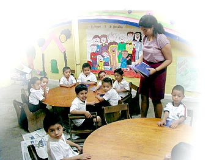

Contact Us
If you would like additional information about our ministry or if you would like to get involved, please feel free to contact us anytime! Our office hours are Mon-Fri 8:00AM-4:00PM Eastern Standard Time except holidays.
Contact Our U.S. Office:
|
Contact Our Ethiopian Office:
|
Blessing The Children International
2267 Fraser Road
Kawkawlin, MI 48631-9145 |
Blessing the Children
P.O. Box 1465
Debre Zeit, East Shoa
Ethiopia |
Telephone: (989) 667-8850
Toll Free: (888) 269-2719
FAX: (989) 684-2005 |
Telephone: +251 911 42 70 95 |
| Email:
Info@BlessingtheChildren.org |
Email:
TadesseG@BCIAcademy.org |
Our Mission
Blessing the Children Canada (BCC) exists for the sole purpose of resourcing Blessing the Children Development Organization in Ethiopia (BCDO) towards their two-fold purpose:
1. Sponsorship of Ethiopia's orphans; and
2. The education of these children.
Resourcing BCDO may take different forms including, but not limited to, finances, personnel, on- or off-site training, literary works, and consultations. All BCC vision-casting, decisions, and actions will be made for the benefit of BCDO and in the interest of its two-fold purpose. "The cost of ignorance is greater than the cost of education." – source unknown
Our Staff
Rick Lamb, Founder and President, Canada
Rick has been actively involved in missions for thirty years and fell in love with Ethiopia specifically in 2009, while on a short term mission trip with Blessing the Children. Impressed by the entirely Ethiopian leadership of Blessing the Children, resourced by international offices, Rick woke up a year later as the founder and president of a new Canadian division. Rick admires Sir Winston Churchill because he did not allow his mistakes to rule him, but chose to learn from them instead. Along with a history of missions, Rick has a rural upbringing, a couple years of Bible school, a red seal in mechanics, and experience as a business owner under his belt, and he uses his past experiences as tools to a better future. You will often find Rick on the family farm with tools or a coffee mug in hand, but you will equally often find him playing games or sharing meals with his wife and four grown children.
Sheila Lamb, Vice President and Office Manager, Canada

Sheila’s life-long interest in missions is what led her to travel the world . . . and to finding Rick. Rick and Sheila met on a mission trip to Peru and were married shortly afterward. Raising four children on the Lamb family farm never stopped Sheila from being involved in missions, so it’s no surprise that she and Rick have now turned to full-time mission work when their calling specifically to Ethiopia became clear in 2009. Impacting the world one child at a time has always been Sheila’s favorite part of missions, and she is thrilled to be able to do this in partnership with brothers and sisters across the globe through the unity of Christ. Corrie Ten Boom, Elizabeth Elliot, and Jackie Pullinger—women who put feet to their faith—have been role models for Sheila as she has grown up and raised her own family to make a difference in the world. Fabulous meals and desserts seem to easily find their way out of Sheila’s kitchen, and she also enjoys expressing her creative talents in quilting and other handicrafts.
Teresa Gripping, Funding Coordinator, Canada
Teresa fell in love with East Africa in 2009 on a short term mission trip to Uganda, during a semester break from Ambrose University College, and then graduated a year later with a Bachelor of Arts in Christian Studies and an interest in cultures. In January 2012, Teresa joined the Blessing the Children team as a director and grant seeker, and has secured two grants for BCC since that time. Bruce Wayne is one of her role models “because he is an ordinary person doing extraordinary things!” When Teresa is not eagerly serving the world’s underprivileged, you might find her watching a Disney movie or baking and dancing around the kitchen to Paul Brandt or the Newsboys.
Tadesse Gabreyes, National Director, Ethiopia
Tadesse has a degree and over seven years of experience in pastoral leadership, and now uses these passions and skills to lead the Ethiopian team as they change lives both physically and spiritually. Just as his name means “renewed”, Tadesse finds joy and fulfillment in serving and equipping the next generation of Ethiopian leaders, renewing their hope for a bright future. Since joining the team at the beginning of Blessing the Children’s work in Debre Zeyit, Tadesse says he has learned so many valuable lessons by working with devoted brothers and sisters across the world. When this busy man gets a little time off, Tadesse loves to read and spend time with his wife and daughter.
Mulugeta Gizaw, Director of Education, Ethiopia
Mulugeta grew up to be just like his math-teacher role model, having completed his first bachelor’s degree in mathematics and then pursuing a complimentary diploma in school administration, and has now taught for greater than twenty years. Perfect for involvement with an elementary school, Mulugeta is exactly the type of man who loves to tell stories and can captivate an audience for hours as he shares his life experiences with children for the edification of the next generation; Mulugeta has been sharing his wisdom with BCI Academy staff and students alike since September of 2009. Mulugeta’s favorite foods are milk, bread, doro wat and kitifo, and his wife and daughters have been known to make the best macchiato in Debre Zeyit.
Furtuna, Assistant Principal, Ethiopia
Furtuna is a vibrant and driven young woman with a diploma in Natural Science and experience as a teacher and administrator, and she values education and hard work. Furtuna says that teaching is essential to learning, which is essential to success, and she loves to teach children towards this end. In addition to classroom time with the children, Furtuna also invests in the other teachers, helping them to succeed as well. Her warm disposition and firm guidance make Furtuna the best at this job. When she’s not teaching children or mentoring teachers, Furtuna can be found listening to Amharic music, keeping herself up to date on the world’s current events, or just spending time with her husband.
Endale Hode, Director of School Administration, Ethiopia
Endale well fits the holistic focus of Blessing the Children through his practical administrative and accounting experience of over twenty years, his love for God, and his desire to share the good news of the Bible with Ethiopia’s next generation; in addition to his Accounting Advance Certificate, he is presently a fourth year theology degree student. One of Endale’s favorite things about working with Blessing the Children since the fall of 2009 is that he has had many opportunities to make a difference in the physical, social, psychological, and spiritual lives of underprivileged children. Whenever he has a little time to spare, Endale can often be found with a newspaper, the Bible, or a table tennis paddle in hand.
Moses (Mussie) Teshome, Director of Business as Mission, Ethiopia
Mussie grew up in a family that emphasized caring for and helping others, so it’s no wonder that he has loved working with Blessing the Children since March of 2010. A diploma in marketing initially turned out not to be the best tool for his passion to care for Ethiopia’s orphans, so Mussie pursued a BA in Public Administration and Development Management, and he now uses both degrees as Blessing the Children’s Director of Business as Mission. The best part about his job is that Mussie is working to give hope in the place where he was born and raised, and that his education and passions have ultimately joined to make a significant impact on his community. Mussie now lives in Debre Zeyit with his wife and two adopted children, both of whom were orphaned and now have the promise of a future, but hopes to move to a suburb where he can enjoy the peaceful scenery and sounds while also raising dairy cows—his favorite farm animal.
Samuel Wegene, Director of Finance, Ethiopia
With six years of post-secondary accounting education, and 9 years of prior experience, Samuel is well qualified to manage Blessing the Children’s financial decisions and resources. Samuel graduated from Admas University College in 2009 with a Bachelor of Arts in Accounting, has been working as a senior accountant of a large firm since then, and has just recently joined Blessing the Children so as to use his skills and talents for the glory of God. Samuel enjoys the arts, so if you don’t find him actively engaging in the arts by singing or reading, you might find him appreciating someone else’s art on TV or the radio.
Kelkias Yidnekachew, Director of Teams, Ethiopia
Kelkias is a new addition to the Blessing the Children team, as of September 2012, and has already been showing his youthful energy as he helps missionaries to maximize their impact. Having just returned from a couple years of Business Administration education in the United States, Kelkias is the perfect candidate to help missionaries adjust to a new culture. Kelkias has given his life to helping Ethiopia’s forsaken and forgotten as a response to the help he once received as a youth. Now his life revolves around making a difference in the lives of everyone he comes into contact with. Kelkias’ favorite song is “Praise You in This Storm” by Casting Crowns, revealing his drive to continue onward in a life of worship and impact in spite all of the storms he encounters.
Betelhem (Betty) Asrat, BCDO Secretary, Ethiopia
From one of the first Blessing the Children partner churches, Betty has been serving Ethiopia’s children since March of 2008. Her Marketing and Management diploma has been a wonderful asset in this ministry, as she is always interacting with people, and she is gifted as a leader. Betty loves going out with friends or just staying home with her husband.
Abdulkadir (Goldy), Misgana Church Social Worker, Ethiopia
Goldy got her nickname from the English translation of her given name, which means “personal gold”, and she certainly has been a treasure to Blessing the Children! Since early 2008, Goldy has been using her diploma in social work to grow and develop the child sponsorship program in her church and community. Her favorite part about this job is the knowledge that she is helping to make a significant impact on the lives of orphaned and underprivileged children.
Getu Belay, Emmanuel Church Social Worker, Ethiopia
Despite his education in business management and religious studies, Getu has spent much of his life playing with children, either as a staff member or a volunteer for various organizations. It is quite clear that he genuinely cares about children, so it is no surprise that his favorite parts of this job as a Blessing the Children social worker is making home visits and playing on activity day. Getu says that the reason he works with such passion and devotion is this: “to be change [in] their life, to make a difference and create a spiritual[ly] sound generation”. If you’re looking for Getu, try Emmanuel Church or one of the many Blessing the Children foster homes; you’ll almost always find Getu with children—even on his day off!
Nigist Teklemariam, Zion Church Social Worker, Ethiopia
Nigist, accompanied by various theological training and a teaching certificate, joined Blessing the Children in July of 2008. Mother of five and a warm personality, Nigist seems to collect children not only into the sponsorship program, but also into her heart and family. It is clear to see that she loves the children she is responsible for, and it wouldn’t be at all shocking to hear a few call her mom. Nigist’s favorite part about this job is talking to the sponsored children and their families, sharing God’s love and praying with them. Another favorite part is encouraging foster parents to become involved in the Blessing the Children microfinance programs, so that they can work to break the cycle of poverty for their family. When she’s not working for Blessing the Children, you might find Nigist at an internet café trying to connect with her older children who are now pursuing education and careers in nearby and far away countries.
Tigist Abdissa, Lemlem Mekena Yesus Church Social Worker, Ethiopia
Tigist is a vibrant and sparkling personality! The newest social worker of the newest partner church, Tigist displays extraordinary talents in working with children and in making visitors to her church and BCI foster homes feel comfortable. Tigist loves listening to Amharic songs by David and Tamerat, watching movies with friends, and praying in the stillness beside one of many nearby lakes.
Letters of Recommendation
Here are some letters of reference from those
who know us and our work.
Southwest Baptist University
- Christian University (Bolivar, Missouri -
USA).
Ministry of Education - Ethiopian Government
Agency.
Ethiopian Call Ministry - Local Ethiopian
Ministry.
EthioDutch - International business
operating locally in Ethiopia.
Our History
Blessing the Children International was founded for the purpose of helping children; it's our reason for existing. Since organizing in 2001, we have partnered with other organizations for the furtherance of existing programs,
establishing of new programs, and provided services in four principle areas:
- Communications: Photography, Letter Writing, Creative Design, Donor Development, Printing & Publications, Literature Development
- Consulting: Corporate Consulting, Marketing Consulting, Program Development,
Database Development, Packaging & Fulfillment, Campaigns & Fundraising
- Services: Travel Services, Meeting Facilitation, Professional Services, Administrative Services, Auditing & Accounting Services
- Management:
Inventory Managing, Mailing List Management, Sponsorship Management, Website Design & Management, Bulk Mailing & Distribution
During BCI's first few years, we focused on partnering with like-minded ministries to increase their effectiveness and assist them in program development and
implementation. Working with over 30 nonprofit organizations in America, Central America, and Africa - this largely composed of measuring, documenting, and communicating the results of their ministries to their donors.
January 2001 - BCI joins a partner ministry in El Salvador, to improve donor communications through regular mailings and publishing a monthly newsletter.
March 2002 - BCI began managing a missionary sponsorship program for a partner ministry in Ethiopia, Africa, and developed a report collection system to keep sponsors informed of their missionary's progress. We also worked with the ministry in publications and a monthly newsletter.
November 2003 - BCI invited to help a partner ministry develop a plan for sponsoring and planting 1,000 new churches in the Benishangul-Gumuz Region of Ethiopia, Africa. Previously, only seven churches existed in the entire region of almost a million people.
January 2004 - BCI launches the Ethiopian Call Ministry through a partner ministry, planting 1,000 new churches in the remote villages of Ethiopia, over the next two years. BCI fully managed all aspects of the program; missionary
deployment, tracking, and data collection for communications to more than 1,500 donors. The one thousandth church was planted September 15th, 2006.
January 2006 - BCI launched the Kamashi Orphanage & School in a remote area of Benishangul Gumuz, Ethiopia, at the president's request. The Kamashi
Orphanage is a 500-bed facility built by the government in 2003, but sat empty for three years due to the government having no operational budget. The orphanage was given to BCI free of charge and we received out first 38 children in January, 2006.
April 2006 - The first team visits the Kamashi Orphanage & School. BCI begins recruiting and hosting mission trips to Ethiopia.
May 2006 - BCI receives 70 new orphaned children into the Kamashi Orphanage, bringing our total to 140.
August 2006 - BCI launches a short-tern missionary program, whereby volunteers from American and
abroad are able to serve in the Kamashi Orphanage. In the same month, the first two short-term missionaries arrive.
March 2007 - BCI announces it will begin receiving infants in cooperation with an adoption agency based out of Florida, to adopt children to good homes in America. First ten infants were received
September, 2007.
October 2007 - BCI announces plans to start a ministry in the Debre Zeyit area of Ethiopia. The Adana Children Center will be an
orphanage, school, community center and foster care program. The word 'Adana' means 'Rescue' in the Amharic language, the national language of Ethiopia.
January 2008 - BCI launches the program in Debre Zeyit, Ethiopia, whereby over the next five years, 600 orphaned children will be rescued and provided wholesome families to care for them as their own children.
April 2008 - BCI consolidates its ministries in Ethiopia to the Debre Zeyit location, ceasing the work in Kamashi.
November 2008 - BCI breaks ground for the construction of the Adana Children Center in Debre Zeyit, Ethiopia. Along with serving the community, this center will also serve as a school
named the "BCI Academy".
September 2009 - BCI completes phase-one construction of the
BCI Academy, opening grades one through four on September
21st, 2009.
November 2009 - Blessing the Children featured in an
article on Wikipedia.
December 2009 - Blessing the Children announces the establishment of Canadian offices, incorporated as a charitable corporation.
January 2010 - Blessing the Children - Canada Inc. began operations and support of ministry projects in Ethiopia.
January 2011 - Completion of BCI Academy's Phase II
construction.
August 2012 - Blessing the Children announces the opening of
nursery, KG (kindergarten) 1 and KG 2 this fall.
September 2012 - Completion of the BCI Academy's last phase of
construction. Enrollment soars to capacity with 299
students in grades nursery through grade 8.
BCI 501(c)(3) Exemption Letter:
http://BlessingTheChildren.org/Forms/Non-ProfitCert.pdf
Statement of Faith:
http://blessingthechildren.org/Forms/Statement_of_Faith.pdf